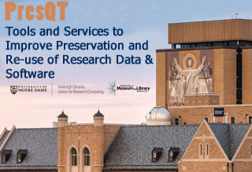

Time:
Mon Jan 28 12PM -5PM EST (17:00-22:00 UTC)
Tues Jan 29 9:00AM -3:30 PM (14:00-20:30 UTC)
Location:
Collaboration Hub Fl 2 Room 231
Hesburgh Library
Notre Dame, Indiana 46556
A Q1 2019 Partner event focused on development effort for Tools and Services to Improve Preservation and Re-use of Research Data & Software
Remote Meeting Participation Link for main room - Day 2: https://notredame.zoom.us/j/262876524
Meeting ID: 262 876 524
One tap mobile:+16465588656,,262876524# US (NY) | 16699006833,,262876524# US (CA)
Dial by your location: +1 646 558 8656 US (NY) | +1 669 900 6833 US (CA)
Find your local number: https://zoom.us/u/acQtgjgibA
Remote Meeting Participation Link for main room - Day 1: https://notredame.zoom.us/j/498500351
Meeting ID: 498 500 351
One tap mobile:+16465588656,,498500351# US (New York) | 16699006833,,498500351# US (San Jose)
Dial by your location: +1 646 558 8656 US (New York) | +1 669 900 6833 US (San Jose)
Find your local number: https://zoom.us/u/acQtgjgibA
MONDAY Noon-5PM
Noon - Opening Remarks - Collaboration Hub Fl 2 Room 231 [John Wang] 12:20-1pm Lunch [Scholar's Lounge- Miranda Van Nevel] 1-1:15 Articulate Workshop Goals [Collaboration Hub Fl 2 Room 231 - Sandra Gesing] 1:15-1:45 Design Document Overview [Sandra] 1:45-2:15 Group Discussion - Reaction to Design Document and User Stories [Sandra] 2:15-2:45pm - Data Discovery Studio Demo/Talk - Ilya Zaslavsky Metadata Edit|Enhancement OSF|Jupyter Connectivity features Break: 2:45-3:00 3-4:45pm Breakout Groups - User Stories: New and Fleshed Out [Rick Johnson] 3-3:35 Fixity [20 min small group, 15 min large group] 3:35-4:10 Keyword Assignment [20 min small group, 15 min large group] 4:10-4:45 Quality [20 min small group, 15 min large group] 4:45-5 Wrap Up [Natalie Meyers] 6:30pm - Social Gathering @ Rohr’s, Morris Inn
Tuesday: 9 AM to 3:30 PM
8:30-9am Breakfast [Miranda - ABP]
9-9:15 Recap and Day’s Goals [Sandra]
9:15-10:15 User Story Deep Dives [Sandra-moderator/Markus-follow up questions]
Add to User Story Google Docs from previous day
10:15-10:45 MetaDIG Demo by Ted Habermann and Peter Slaughter, National Center for Ecological Analysis and Synthesis at UC Santa Barbara
10:45-11: Break
11-12: User Story Deep Dives Cont [Markus]
12-1 Lunch [Scholar's Lounge Miranda - Elia’s]
1-2:00pm - Timelines and Partner Expectations [Markus/Natalie/Miranda]
2-3:00pm - Questions and Discussion [Rick]
3pm Closing Remarks [John]
For the Q1 2019 Partner Meeting, If you would like help booking travel, please reach out to Miranda VanNevel (This email address is being protected from spambots. You need JavaScript enabled to view it.).
For information about hotel accommodations, visit the Morris Inn.For more information on visiting Notre DameSee Visitors' Campus info.
Questions? email the PresQT Team (This email address is being protected from spambots. You need JavaScript enabled to view it.).